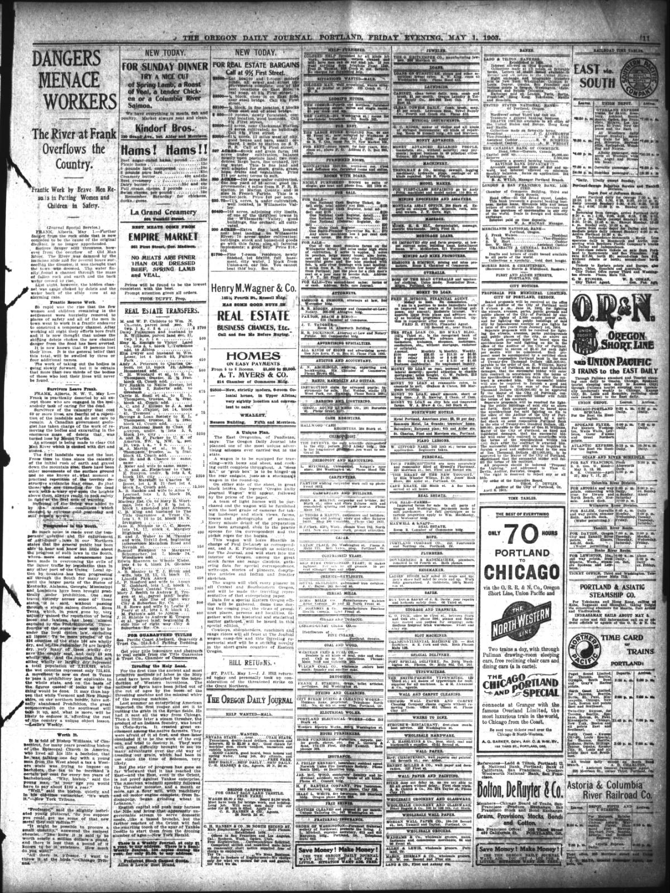
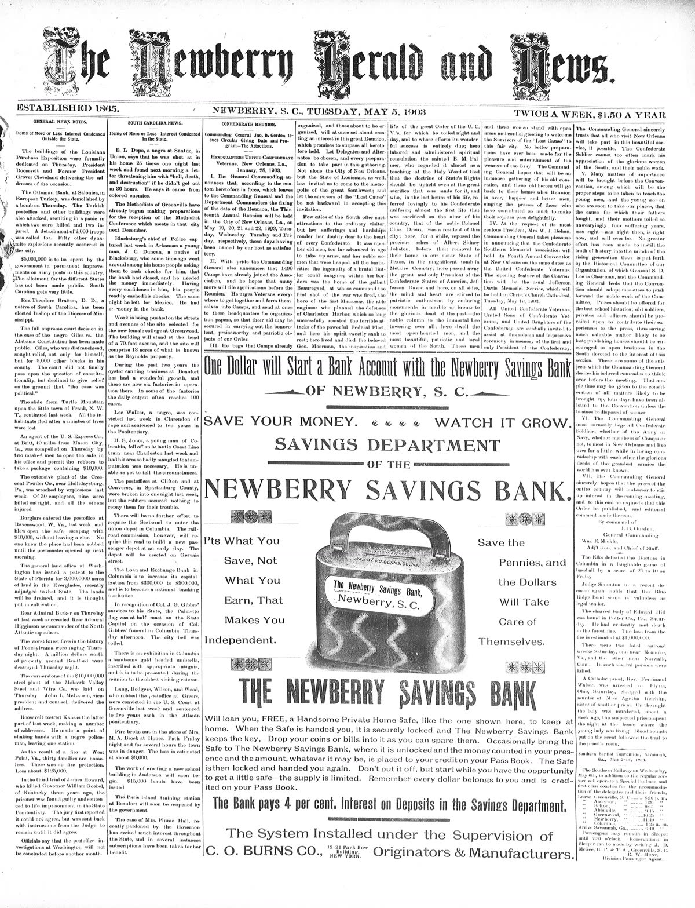
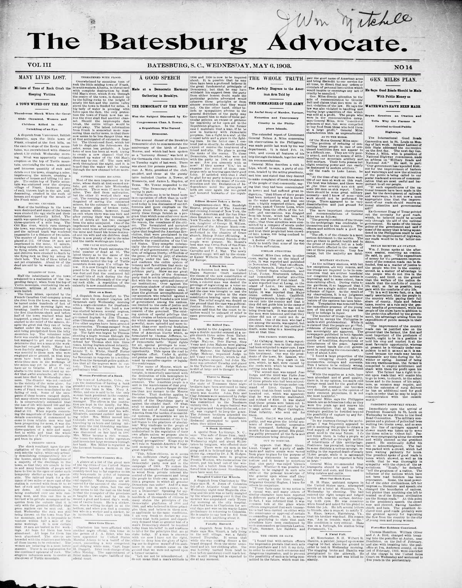
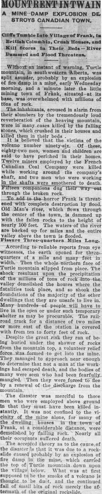

HN-336 · May 8, 1903 · Disasters, Accidents & Emergencies > Landslides, Avalanches & Ground Failures > Landslides, avalanches and spoil-heap failures
1903 Frank Slide contemporaries debated eruption/volcano, mine damp and other mechanisms while toll changed.
Source: Rensselaer Semi-Weekly Republican, p. 2 — original page; Alberta Geological Survey; Alberta historic-place assessment.
Report: Reporting the April 29 rockslide at Frank, the paper claimed Turtle Mountain had been split by an explosion of mine gas, placed the town in British Columbia, and estimated 96 deaths as rock crushed sleeping residents. It warned of flooding from a temporarily dammed river and repeated alarming claims about miners killed in the shaft.
Assessment: Several important corrections: Frank is in Alberta, not British Columbia; Alberta's geological survey documents more than 70 deaths and says unstable geological structure, not a demonstrated mine-gas explosion, was the principal cause. Mining and other factors may have contributed, but this article's single-cause explanation is unsupported.
Class: Competing accounts (P)
Recorded difference/concern: 1903 Frank Slide contemporaries debated eruption/volcano, mine damp and other mechanisms while toll changed.
Assessment: These were hypotheses; a same-date Oregon rockfall story is a DIFFERENT incident, explicitly excluded.
Source links: https://oregonnews.uoregon.edu/lccn/sn85042444/1903-05-01/ed-1/seq-11/ https://historicnewspapers.sc.edu/lccn/sn93067777/1903-05-05/ed-1/seq-1/ https://historicnewspapers.sc.edu/lccn/sn92065508/1903-05-06/ed-1/seq-1/
Authentic images retrieved from Historic Oregon Newspapers (University of Oregon), South Carolina Historic Newspapers (University of South Carolina) and Hoosier State Chronicles (Indiana State Library). Article crops are located using the archive's own OCR word coordinates and rendered at native crop resolution; article clips are assembled from the archive's own article-block images; page images marked "archive tiles" are stitched from the archive's own tiled page service at its 256-px tile cap; page images marked "issue PDF" are single pages rasterised from the archive's own issue PDF, with the page chosen by matching the headline against the PDF's text layer; page scans are reduced-size access renditions. No images were generated, mocked, or retouched.




Status: Archive images acquired
Authentic archive-owned image renditions were retrieved for this record and are displayed above. The source-acquisition manifest preserves the original pre-acquisition feasibility assessment.
URL (preserved verbatim): https://newspapers.library.in.gov/?a=d&d=RSWR19030508.2.56
Saved research report: Historical_Newspaper_Event_Research_328-352_2026-10-23.md
Evidence note: A newspaper report means a historical publication made a claim; it does not establish that claim as fact. Contemporary reporting is separated from later scholarly context and our own assessment.